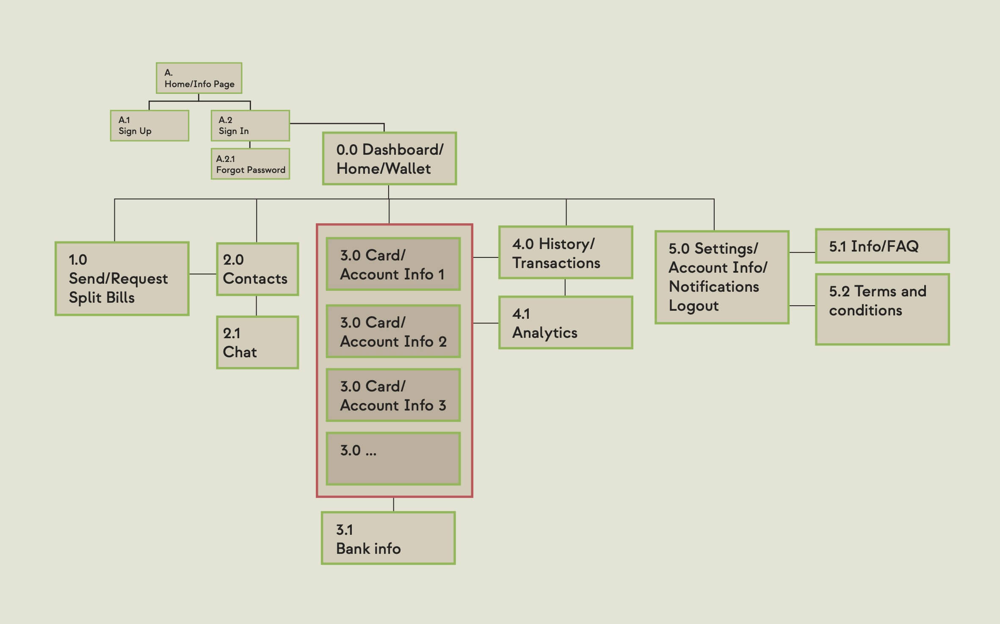

Introducing PlutoPay
Your All-in-One Banking Companion!
Discover the power of PlutoPay, the ultimate banking and wallet app that puts you in the driver’s seat of your financial journey. We’ve partnered with banks to uncover hidden fees and expose dark patterns, ensuring that you stay informed and in control.
Let's Get Started
Throughout this project, I immersed myself in thorough research, iterative design, and extensive user testing to create a seamless and intuitive user experience.
Join me as I share the intricacies of my process, uncovering valuable insights, design decisions, and the transformative impact on user satisfaction.
Dive into the journey behind PlutoPay's evolution into a user-centric and efficient digital wallet solution, crafted with passion and dedication.
Empathize The first stage involved conducting extensive user research and employing empathy techniques to gain a deep understanding of the target audience's needs, desires, and challenges.
Next, a meticulous process of problem definition was carried out for a clear articulation of the core issue and for identifying the key factors that needed attention.
Through a creative ideation phase, a wide range of innovative ideas and potential solutions were generated.
Building upon the ideation phase, tangible prototypes were developed to bring the ideas to life and facilitate iterative improvements through feedback and testing.
Thorough testing procedures were conducted, allowing real users to interact with the prototypes and providing valuable insights for refining and validating the design.
Finally, the refined solution was implemented, incorporating user feedback and making necessary adjustments to ensure a successful and seamless deployment.
Empathize
Competitive Analysis
In order to better understand this industry and find out where the product currently fits within the market, I conducted a competitor analysis. I focused on companies with a similar target market: Banking and Wallet Apps with a social aspect. Examples of two of the Competitors PayPal and Venmo
PayPal
PayPal is a global eCommerce platform for buyers & sellers. PayPal allows payments & money transfers to be made securely via email, phone, text message, or Skype.
Overall Strategy
PayPal has created better ways to manage and move money in a digital place. It achieved this through technological innovation and strategic partnerships. It offers choices and flexibility when sending payments, paying or getting paid with a wide array of merchants and vendors accepting it.
Key Objectives
A touch-free way to pay or be paid
- send and receive money
- Notification every time you spend money
- secure transactions
- rechargeable digital cash card
Venmo
Venmo is an American mobile payment service. It was aimed at friends and family who wish to split bills, e.g. for movies, dinner, rent, or event tickets
Overall Strategy
Venmo is one of the most popular apps for electronically transferring funds among friends or in casual settings. The concept is digital payments within a social network of known friends and people in close geographical proximity. Venmo encourages the social aspect of the application through comments using jokes or emoji and/or likes.
Key Objectives
It’s the money app for split- ting the cost of almost anything - right then, right there.
- It makes settling up feel like catching up
- People can add a note to each payment to remember the moments, not the money.
Beyond this I also included an extensive marketing profile, market advantage, a swot analysis and a UX analysis for both Competitors
Potential Problems
- Cluttered design with too many options on any given screen
- Confusing language
- Hidden fees or opaque payment structure
- Security issues
Potential Solutions
A stable and reliable app that grants users more transparency through working with financial institutes to provide a cost breakdown for all fees.
And pay and budgeting features like:
- • Paying bills with any card
- • Splitting bills with other users
- • Overviews over all cards, accounts and transactions with filtered search options.
- • Creation of pockets and groups (for example, a vacation savings pocket with a set monthly goal)
From our market research, I created a Business Requirement Document to share with stakeholder and formulated user stories to get a more tangible understanding of our user's needs and goals.
Define
User Interviews
In Order to better understand the pain points of potential users and current state of the market, I interviewed people from a wide array of backgrounds, genders and age ranges. I asked the participants about their habits around banking and wallet apps to better understand:
- • What functions, outside of payment, are the most important functions for fi- nance/wallet apps?
- • Which apps or services are currently being used to facilitate payments and so on by customers and why?
- • What concerns do people have when using finance appsThe Insights from the Interviews could be grouped into four groups:
- • Paying habits
- • Wanted/missing Features
- • Trust Issues
- • Bank IssuesThese Insights would become the fundamental building blocks for creating the design.
From this I created the:
Personas, User Journey Maps and Flows
Ideate
Card Sorting and Sitemaps
Once I had a solid list of requirements for the new design, I conducted a card sorting session, to get a better grasp of how users expect the content to be organized.During the card sorting session, I asked participants to organize tasks into categories, which they had to come up by themselves. I used a similarity matrix to interpret the data, which illustrates the relationships between the categorized task. Additionally, an agreement dendrogram was employed to showcase the level of consensus among participants. This shows the preferred content organization.
Overall, this exercise proved to be instrumental in refining our understanding of users’ perspectives and informed our design decisions accordingly when creating the sitemap:
Prototype
The next hurdle was to transform the flows into practical wireframes. This crucial step involved distilling all the data into meaningful information that users could easily digest. My aim was to create an effortless and hassle-free experience when it came to navigation and finding information.To achieve this, I had to keep the number of screens to a minimum. This meant creating numerous wireframe variations, where different features and functions were combined, in order to determine which ones performed better than others.I was aware of the potential of overwhelming the user. Balancing this concern, I strove to minimize the risk without compromising any essential features or critical information. It was a delicate balancing act to ensure a user-friendly experience while retaining the necessary functionality.
Wireframes
Mid fidelity prototypes
Test
Usability Tests
During the usability testing phase, a series of carefully planned tests were conducted to assess the effectiveness, efficiency, and overall user experience of our design. Real users were engaged in interactive sessions, where they performed specific tasks and provided valuable feedback. The tests helped identify pain points, usability issues, and areas for improvement, allowing us to iterate and refine the design to ensure optimal usability and user satisfaction. The insights gathered from these tests were invaluable in guiding our decision-making and ultimately enhancing the usability of our product.
Preference Test
For details between screens and design related questions that arose from the user tests, I conducted a few small preference tests to gain larger, more quantitive data.
Like in this example, two users during the user tests mentioned they weren’t quite happy with how the name of the app and the dashboard header were handled. So I created this preference test to see which version users prefer.
Implement

Next, I reworked the prototypes with the feedback from the user tests in mind. I also developed a design language system to set fonts, colors, logos and other visual material.
This Document serves as a guide for other designer to understand the design language, so anyone will be able to create design for this app.

This project has been an incredibly fulfilling journey for me as a designer. By prioritizing user needs and applying design thinking methodologies, I have created a wallet app, PlutoPay, that truly simplifies financial management and brings joy to users.